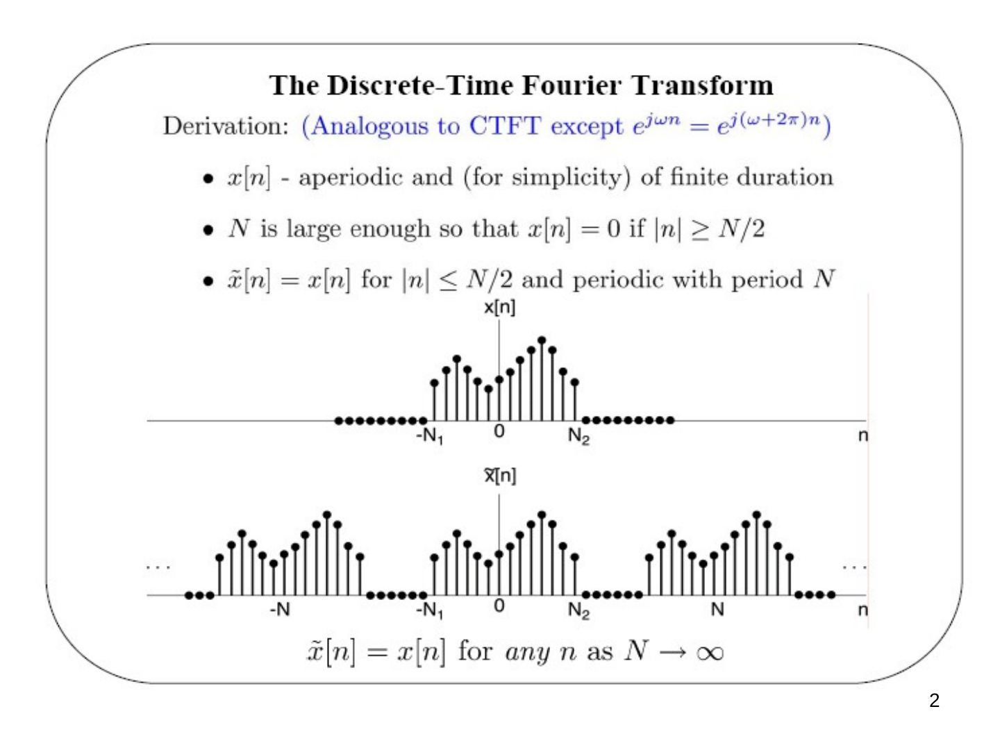
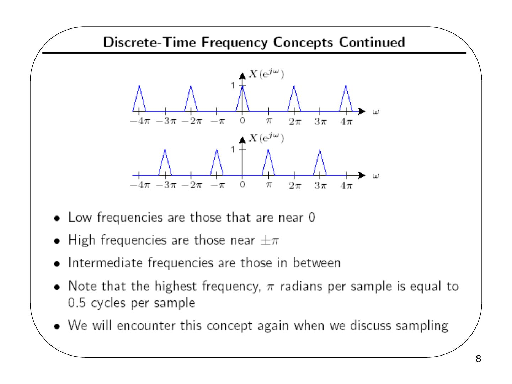
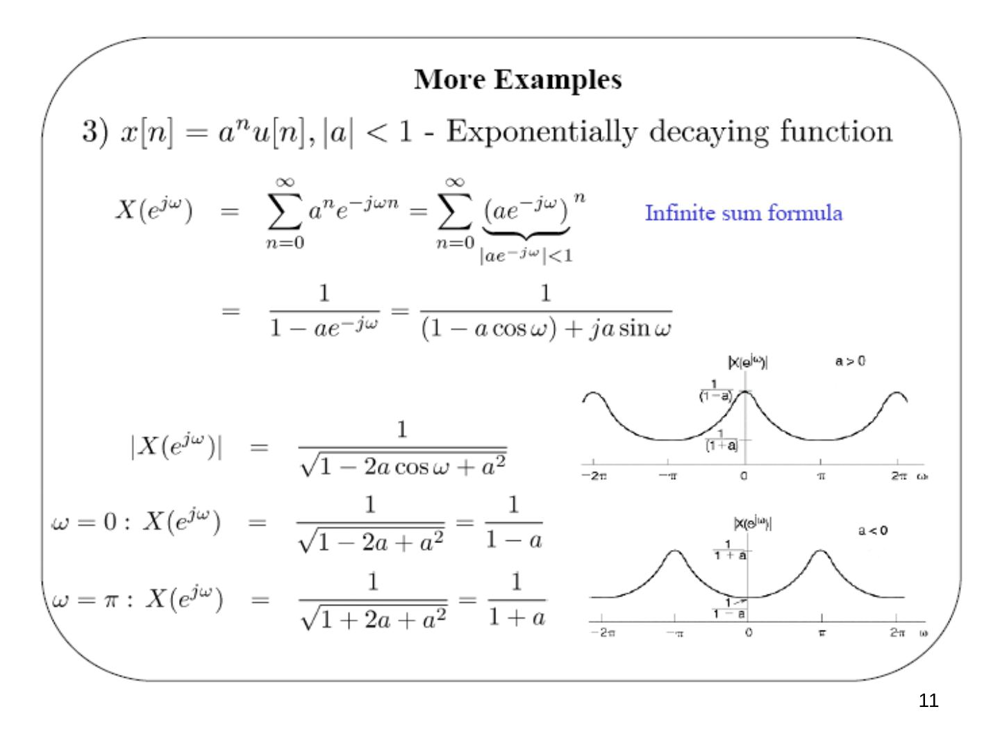
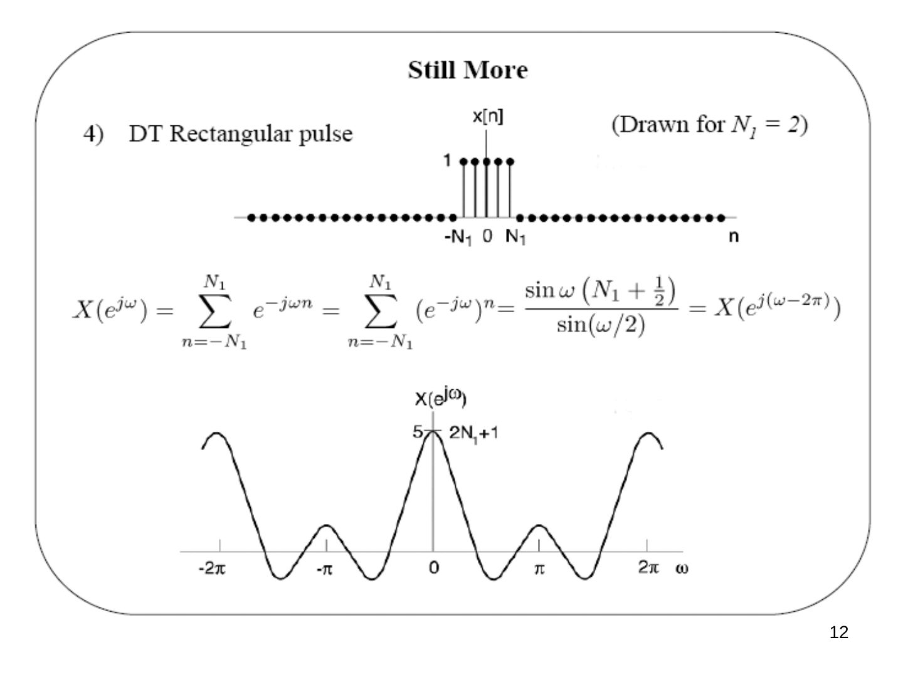
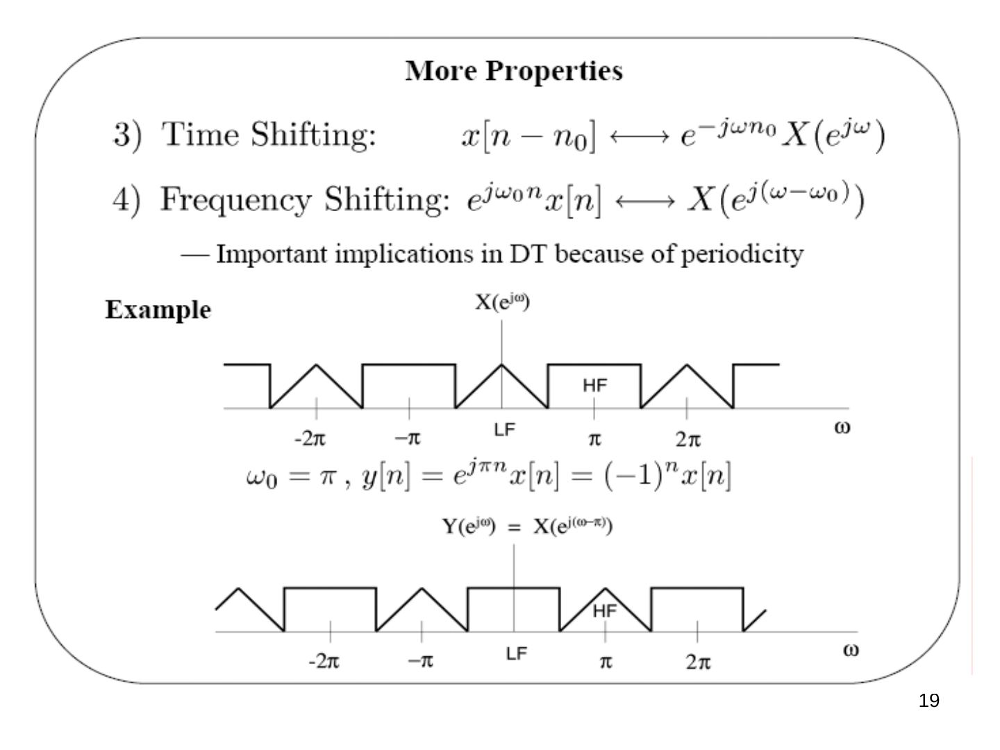
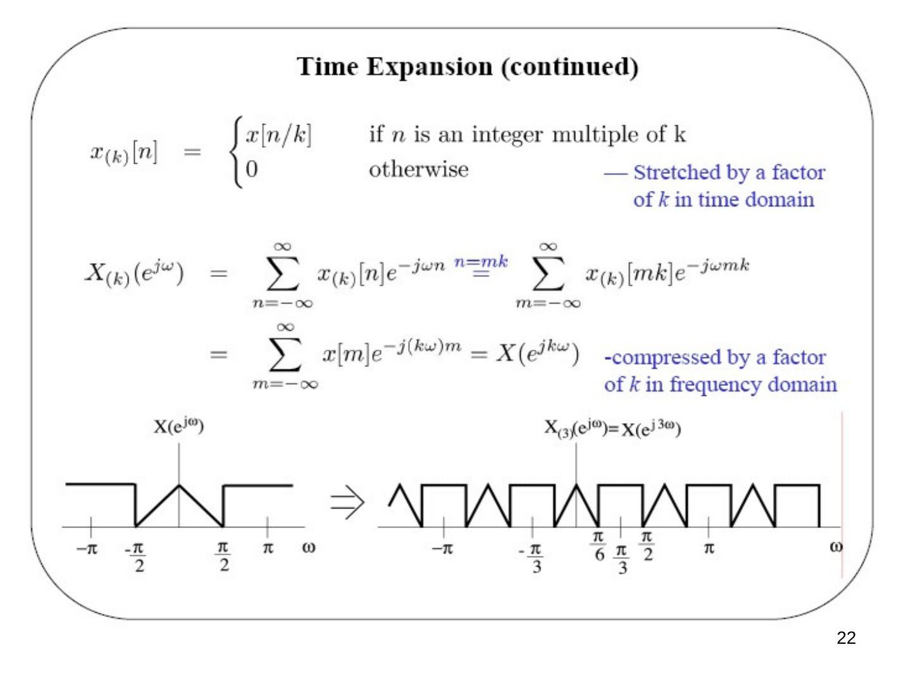
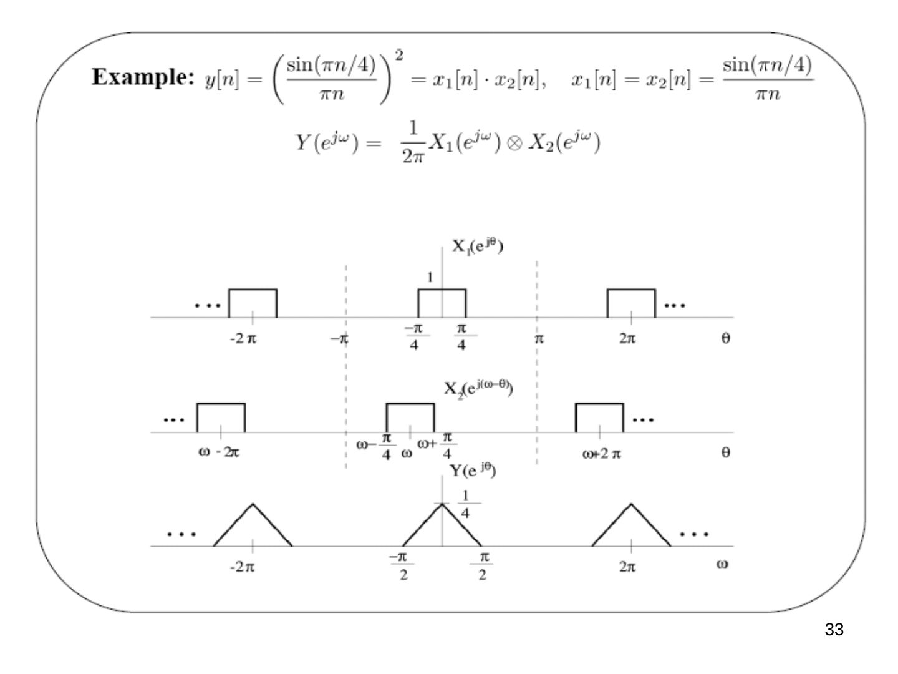
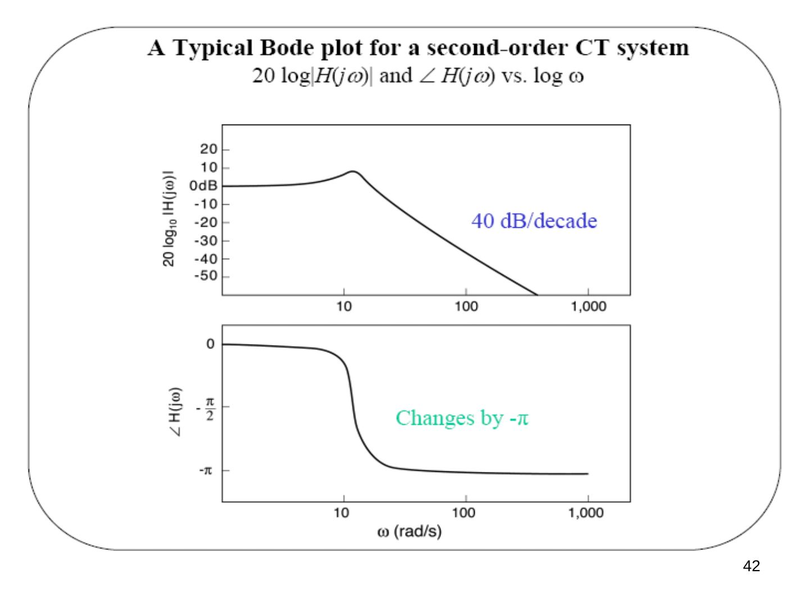
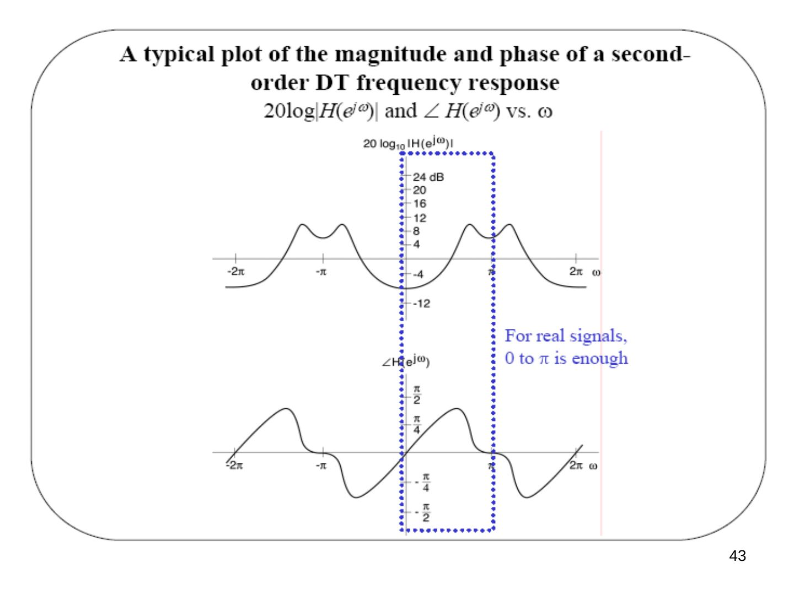

· EEM301
EEM301 Sinyaller ve Sistemler I: Ayrık Zamanlı Fourier Dönüşümü (DTFT), Özellikleri ve Frekans Yanıtı
EEM301 – Sinyaller ve Sistemler I · 23.10.2005 · 16.10.2026
Bu yazı, Başkent Üniversitesi Elektrik-Elektronik Mühendisliği EEM301 Sinyaller ve Sistemler I dersinin son bölümü olan "DT Fourier Transform" (Ayrık Zamanlı Fourier Dönüşümü) sunumudur. Sunumu dersin öğretim üyesi Prof. Dr. Alper Uraz hazırlamış (Ekim 2005). Slaytların neredeyse tamamı görsel olduğu için içerik metne döküldü; formüller düz metne çevrildi, grafikler için slayt görselleri eklendi. Sunum İngilizce olduğundan içerik İngilizce aktarıldı. Orijinal PowerPoint dosyası yazının sonunda indirilebilir.
Sunumun konuları:
- Derivation of DT Fourier Transform pair
- DTFT of Periodic Signals
- Properties of DTFT
- Convolution Property
- DT LTI Systems
- Duality in Fourier Analysis
- Magnitude/Phase of FT and Frequency Response
The discrete-time Fourier transform
Derivation (analogous to the CTFT, except that e^(jωn) = e^(j(ω+2π)n)):
- x[n] is aperiodic and (for simplicity) of finite duration.
- N is large enough so that x[n] = 0 if |n| ≥ N/2.
- x̃[n] = x[n] for |n| ≤ N/2 and periodic with period N.
- x̃[n] = x[n] for any n as N → ∞.

From the DTFS:
x̃[n] = Σ (k = ⟨N⟩) ak e^(jkω0n), ω0 = 2π/N (DTFS synthesis eq.)
ak = (1/N) Σ (n = ⟨N⟩) x̃[n] e^(−jkω0n) = (1/N) Σ (n = −N1…N2) x̃[n] e^(−jkω0n) = (1/N) Σ (n = −∞…∞) x[n] e^(−jkω0n) (DTFS analysis eq.)
Define X(e^(jω)) = Σ (n = −∞…∞) x[n] e^(−jωn) — periodic in ω with period 2π. Then ak = (1/N) X(e^(jkω0)), and
x̃[n] = Σ (k = ⟨N⟩) (1/N) X(e^(jkω0)) e^(jkω0n) = (1/2π) Σ (k = ⟨N⟩) X(e^(jkω0)) e^(jkω0n) ω0 (∗)
As N → ∞: x̃[n] → x[n] for every n, ω0 → 0 and Σ ω0 → ∫ dω, so the sum in (∗) becomes an integral. The DTFT pair:
- x[n] = (1/2π) ∫2π X(e^(jω)) e^(jωn) dω — synthesis equation (inverse FT; over any 2π interval in ω)
- X(e^(jω)) = Σ (n = −∞…∞) x[n] e^(−jωn) — analysis equation (FT)
Observations
- These are called the analysis and synthesis equations, respectively.
- Recall that e^(jωn) = e^(j(ω+ℓ2π)n) for any pair of integers ℓ and n.
- Thus X(e^(jω)) is a periodic function of ω with a fundamental period of 2π.
- Unlike the DT Fourier series, the frequency ω is continuous.
- Recall that the CT Fourier transform X(jω) was not periodic.
- Thus the DT synthesis integral can be taken over any continuous interval of length 2π.
- This is similar to the CT Fourier series analysis equation.
Discrete-time frequency concepts
- Recall that e^(j(ω+ℓ2π)n) = e^(jωn).
- If seemingly very high-frequency DT signals, cos((ω + ℓ2π)n), are equal to low-frequency DT signals, cos(ωn), what do low and high frequency mean in discrete time?
- Note that the units of ω are radians per sample.
- A sinusoid with a frequency of 0.1 radians per sample is the same as one with a frequency of (0.1 + 2π) radians per sample.
- Recall that cos(πn) = (−1)ⁿ.
- No DT signal can oscillate "faster" between two samples.
- No DT signal can oscillate "slower" than 0 radians per sample.
- Thus ω = π = ℓ(π + 2π) is the highest perceivable DT frequency, and ω = 0 = ℓ(2π) is the lowest perceivable frequency.
Not: Bu iki ifade ω = π + ℓ2π ve ω = ℓ2π biçiminde olmalı.

- Low frequencies are those near 0.
- High frequencies are those near ±π.
- Intermediate frequencies are those in between.
- The highest frequency, π radians per sample, equals 0.5 cycles per sample.
- We will encounter this concept again when we discuss sampling.
Convergence issues
- Synthesis equation: none, since we integrate over a finite interval.
- Analysis equation: needs conditions analogous to the CTFT, e.g. Σ |x[n]|² < ∞ (finite energy) or Σ |x[n]| < ∞ (absolutely summable).
Examples (parallel with the CT examples)
- x[n] = δ[n]: X(e^(jω)) = Σ δ[n] e^(−jωn) = 1.
- x[n] = δ[n − n0] (shifted unit sample): X(e^(jω)) = e^(−jωn0) — the same amplitude (= 1) as above, but with a linear phase −ωn0.
- x[n] = aⁿ u[n], |a| < 1 — exponentially decaying function. Using the infinite sum formula (|a e^(−jω)| < 1):
X(e^(jω)) = Σ (n = 0…∞) (a e^(−jω))ⁿ = 1/(1 − a e^(−jω)) = 1/((1 − a cos ω) + j a sin ω)
| X(e^(jω)) | = 1/√(1 − 2a cos ω + a²); at ω = 0: 1/(1 − a); at ω = π: 1/(1 + a). For a > 0 this is lowpass, for a < 0 highpass. |
|---|

4) DT rectangular pulse x[n] = 1 for |n| ≤ N1 (drawn for N1 = 2):
X(e^(jω)) = Σ (n = −N1…N1) e^(−jωn) = sin ω(N1 + 1/2) / sin(ω/2) = X(e^(j(ω−2π))), with X(e^(j0)) = 2N1 + 1 = 5.
5) Ideal lowpass spectrum: X(e^(jω)) = 1 for |ω| < W (repeated every 2π):
x[n] = (1/2π) ∫ (−W…W) e^(jωn) dω = sin Wn / πn, x[0] = (1/2π) ∫ (−W…W) X(e^(jω)) dω = W/π.

DTFT of periodic signals
DTFTs of sums of complex exponentials. Recall the CT result x(t) = e^(jω0t) ↔ X(jω) = 2πδ(ω − ω0). What about DT, x[n] = e^(jω0n) ↔ X(e^(jω)) = ?
- We expect an impulse (of area 2π) at ω = ω0.
- But X(e^(jω)) must be periodic with period 2π.
In fact X(e^(jω)) = 2π Σ (m = −∞…∞) δ(ω − ω0 − 2πm).
Note: the integration in the synthesis equation is over a 2π period, so we only need X(e^(jω)) in one 2π period. Thus x[n] = (1/2π) ∫ (−π…π) 2π Σ δ(ω − ω0 − 2πm) e^(jωn) dω = e^(jω0n).
Periodic signals, x[n] = x[n + N]: x[n] = Σ (k = ⟨N⟩) ak e^(jkω0n), ω0 = 2π/N (DTFS synthesis eq.). From the last result, e^(jkω0n) ↔ 2π Σm δ(ω − kω0 − 2πm), so by linearity of the DTFT:
X(e^(jω)) = Σ (k = ⟨N⟩) ak [2π Σm δ(ω − kω0 − 2πm)] = 2π Σ (k = −∞…∞) ak δ(ω − kω0) = 2π Σ ak δ(ω − 2πk/N)
Example — DT sine function: x[n] = sin ω0n = (1/2j) e^(jω0n) − (1/2j) e^(−jω0n)
X(e^(jω)) = (π/j) Σm δ(ω − ω0 − 2πm) − (π/j) Σm δ(ω + ω0 − 2πm)
Example — DT periodic impulse train: x[n] = Σ (k = −∞…∞) δ[n − kN], ω0 = 2π/N.
ak = (1/N) Σ (n = ⟨N⟩) x[n] e^(−jkω0n) = (1/N) Σ (n = 0…N−1) δ[n] e^(−jkω0n) = 1/N
⇒ X(e^(jω)) = (2π/N) Σ (k = −∞…∞) δ(ω − 2πk/N) — also a periodic impulse train, in the frequency domain!
Properties of the DT Fourier transform
- Periodicity: X(e^(j(ω+2π))) = X(e^(jω)) — different from the CTFT.
- Linearity: a x1[n] + b x2[n] ↔ a X1(e^(jω)) + b X2(e^(jω))
- Time shifting: x[n − n0] ↔ e^(−jωn0) X(e^(jω))
- Frequency shifting: e^(jω0n) x[n] ↔ X(e^(j(ω−ω0))) — important implications in DT because of periodicity. Example: with ω0 = π, y[n] = e^(jπn) x[n] = (−1)ⁿ x[n], and Y(e^(jω)) = X(e^(j(ω−π))): the low-frequency (LF) and high-frequency (HF) parts of the spectrum swap places.
- Time reversal: x[−n] ↔ X(e^(−jω))
- Conjugate symmetry: x[n] real ⇒ X(e^(jω)) = X*(e^(−jω)). Hence |X(e^(jω))| and Re{X(e^(jω))} are even functions, ∠X(e^(jω)) and Im{X(e^(jω))} are odd functions; x[n] real and even ⇔ X(e^(jω)) real and even; x[n] real and odd ⇔ X(e^(jω)) purely imaginary and odd.

7) Time expansion. Recall the CT property x(at) ↔ (1/|a|) X(j(ω/a)) — time scale in CT is infinitely fine. But in DT, x[n/2] makes no sense and x[2n] misses the odd values of x[n]. We can "slow" a DT signal down by inserting zeros: for an integer k ≥ 1, x(k)[n] inserts (k − 1) zeros between successive values (two zeros for k = 3):
x(k)[n] = x[n/k] if n is an integer multiple of k, 0 otherwise — stretched by a factor of k in the time domain.
X(k)(e^(jω)) = Σn x(k)[n] e^(−jωn) = (n = mk) Σm x(k)[mk] e^(−jωmk) = Σm x[m] e^(−j(kω)m) = X(e^(jkω)) — compressed by a factor of k in the frequency domain.

8) Differentiation in frequency. X(e^(jω)) = Σ x[n] e^(−jωn) ⇒ dX(e^(jω))/dω = −j Σ n x[n] e^(−jωn). Multiplying both sides by j:
n x[n] ↔ j dX(e^(jω))/dω (multiplication by n ⇔ differentiation in frequency)
9) Parseval's relation:
Σ (n = −∞…∞) |x[n]|² = (1/2π) ∫2π |X(e^(jω))|² dω (total energy in the time domain = total energy in the frequency domain)
Differencing: x[n] − x[n − 1] ↔ (1 − e^(−jω)) X(e^(jω)) — similar to a continuous-time derivative.
Accumulation: Σ (m = −∞…n) x[m] ↔ (1/(1 − e^(−jω))) X(e^(jω)) + π X(e^(j0)) Σ (ℓ = −∞…∞) δ(ω − 2πℓ) — similar to continuous-time integration.
The convolution property
x[n] → h[n] → y[n] = h[n] ∗ x[n] ⇔ Y(e^(jω)) = H(e^(jω)) X(e^(jω))
⇒ the frequency response H(e^(jω)) is the DTFT of the unit sample response.
Example: x[n] = e^(jω0n) ↔ X(e^(jω)) = 2π Σk δ(ω − ω0 − 2πk)
Y(e^(jω)) = H(e^(jω)) 2π Σk δ(ω − ω0 − 2πk) = 2π Σk H(e^(j(ω0+2πk))) δ(ω − ω0 − 2πk) = (H periodic) H(e^(jω0)) 2π Σk δ(ω − ω0 − 2πk) ⇒ y[n] = H(e^(jω0)) e^(jω0n)
Example — ideal lowpass filter: H(e^(jω)) = 1 for |ω| < ωc (repeated every 2π) ⇒ h[n] = (1/2π) ∫ (−ωc…ωc) e^(jωn) dω = sin ωcn / πn.
Example: (sin(πn/4)/πn) ∗ (sin(πn/2)/πn) = sin(πn/4)/πn, since in frequency a lowpass of width ±π/4 times a lowpass of width ±π/2 gives the lowpass of width ±π/4.
Convolution property example: h[n] = αⁿ u[n], x[n] = βⁿ u[n], |α|, |β| < 1.
H(e^(jω)) = 1/(1 − α e^(−jω)), X(e^(jω)) = 1/(1 − β e^(−jω)) ⇒ Y(e^(jω)) = (1/(1 − α e^(−jω)))(1/(1 − β e^(−jω))) — a ratio of polynomials in e^(−jω).
- β ≠ α: by partial fraction expansion (PFE), Y(e^(jω)) = A/(1 − α e^(−jω)) + B/(1 − β e^(−jω)), with A, B determined by the PFE ⇒ y[n] = A αⁿ u[n] + B βⁿ u[n].
- β = α: Y(e^(jω)) = (1/(1 − α e^(−jω)))²; using n x[n] ↔ j dX(e^(jω))/dω ⇒ y[n] = (n + 1) αⁿ u[n].
DT LTI systems described by LCCDEs
Σ (k = 0…N) ak y[n − k] = Σ (k = 0…M) bk x[n − k]
From the time-shifting property x[n − k] ↔ e^(−jωk) X(e^(jω)):
Σ ak e^(−jkω) Y(e^(jω)) = Σ bk e^(−jkω) X(e^(jω)) ⇒ Y(e^(jω)) = [Σ (k = 0…M) bk e^(−jkω) / Σ (k = 0…N) ak e^(−jkω)] X(e^(jω))
The bracket is H(e^(jω)), the DT transfer function — a rational function of e^(−jω); use PFE to get h[n].
Example — first-order recursive system: y[n] − α y[n − 1] = x[n], |α| < 1, with the condition of initial rest (⇔ causal):
(1 − α e^(−jω)) Y(e^(jω)) = X(e^(jω)) ⇒ H(e^(jω)) = Y(e^(jω))/X(e^(jω)) = 1/(1 − α e^(−jω)) ⇒ h[n] = αⁿ u[n]
DTFT multiplication property
y[n] = x1[n]·x2[n] ↔ Y(e^(jω)) = (1/2π) ∫2π X1(e^(jθ)) X2(e^(j(ω−θ))) dθ = (1/2π) X1(e^(jω)) ⊗ X2(e^(jω)) — a periodic convolution.
Derivation:
Y(e^(jω)) = Σn x1[n] x2[n] e^(−jωn) = Σn ((1/2π) ∫2π X1(e^(jθ)) e^(jθn) dθ) x2[n] e^(−jωn) = (1/2π) ∫2π X1(e^(jθ)) (Σn x2[n] e^(−j(ω−θ)n)) dθ = (1/2π) ∫2π X1(e^(jθ)) X2(e^(j(ω−θ))) dθ
Calculating periodic convolutions. Integrating from −π to π:
Y(e^(jω)) = (1/2π) ∫ (−π…π) X1(e^(jθ)) X2(e^(j(ω−θ))) dθ = (1/2π) ∫ (−∞…∞) X̂1(e^(jθ)) X2(e^(j(ω−θ))) dθ, where X̂1(e^(jθ)) = X1(e^(jθ)) for |θ| ≤ π and 0 otherwise.
Example: y[n] = (sin(πn/4)/πn)² = x1[n]·x2[n], x1[n] = x2[n] = sin(πn/4)/πn. Y(e^(jω)) = (1/2π) X1(e^(jω)) ⊗ X2(e^(jω)) is a triangle between −π/2 and π/2 with peak value 1/4 (repeated every 2π).

Duality in Fourier analysis
The Fourier transform is highly symmetric.
CTFT: both time and frequency are continuous and in general aperiodic. x(t) = (1/2π) ∫ X(jω) e^(jωt) dω and X(jω) = ∫ x(t) e^(−jωt) dt are the same except for the factor 1/2π and the sign of the exponent. Suppose f(·) and g(·) are related by f(r) = ∫ g(τ) e^(−jrτ) dτ. Then:
- with τ = t and r = ω: x1(t) = g(t) ↔ X1(jω) = f(ω)
- with τ = −ω and r = t: x2(t) = f(t) ↔ X2(jω) = 2π g(−ω)
Example of CTFT duality: a square pulse in either the time or the frequency domain (pulse ↔ sinc, sinc ↔ pulse).
DTFS: discrete & periodic in time ↔ periodic & discrete in frequency: x[n] = Σ (k = ⟨N⟩) ak e^(jkω0n) = x[n + N], ω0 = 2π/N; ak = (1/N) Σ (n = ⟨N⟩) x[n] e^(−jkω0n) = a(k+N).
Duality in DTFS. Suppose f[·] and g[·] are related by f[m] = (1/N) Σ (r = ⟨N⟩) g[r] e^(−jrω0m) ⇒ g[r] = Σ (m = ⟨N⟩) f[m] e^(jrω0m). Then:
- with m = n and r = −k: x1[n] = f[n] ↔ ak = (1/N) g[−k]
- with r = n and m = k: x2[n] = g[n] ↔ ak = f[k]
Duality between CTFS and DTFT:
- CTFS: x(t) = Σ ak e^(jkω0t) = x(t + T), ω0 = 2π/T; ak = (1/T) ∫T x(t) e^(−jkω0t) dt — periodic in time ↔ discrete in frequency.
- DTFT: x[n] = (1/2π) ∫2π X(e^(jω)) e^(jωn) dω; X(e^(jω)) = Σ x[n] e^(−jωn) = X(e^(j(ω+2π))) — discrete in time ↔ periodic in frequency.
CTFS–DTFT duality. Suppose f(·) is a CT signal and g[·] a DT sequence related by f(τ) = Σ (m = −∞…∞) g[m] e^(jmτ) = f(τ + 2π). Then x(t) = f(t) ↔ ak = g[k] (periodic with period 2π), and x[n] = g[n] ↔ X(e^(jω)) = f(−ω).
Magnitude and phase of FT, and frequency response
- CT: x(t) = (1/2π) ∫ X(jω) e^(jωt) dω, X(jω) = |X(jω)| e^(j∠X(jω)). Parseval relation: ∫ |x(t)|² dt = ∫ (1/2π) |X(jω)|² dω, where (1/2π)|X(jω)|² is the energy density in ω.
- DT: x[n] = (1/2π) ∫2π X(e^(jω)) e^(jωn) dω, X(e^(jω)) = |X(e^(jω))| e^(j∠X(e^(jω))). Parseval relation: Σ |x[n]|² = ∫2π (1/2π) |X(e^(jω))|² dω.
Log-magnitude and phase. For x(t) → H(jω) → y(t): |Y(jω)| = |H(jω)|·|X(jω)|, or log|Y(jω)| = log|H(jω)| + log|X(jω)|, and ∠Y(jω) = ∠H(jω) + ∠X(jω). For cascaded H1(jω) and H2(jω): log|H(jω)| = log|H1(jω)| + log|H2(jω)| and ∠H(jω) = ∠H1(jω) + ∠H2(jω) — easy to add.
Plotting log-magnitude and phase
- For real-valued signals and systems, |H(−jω)| = |H(jω)| and ∠H(−jω) = −∠H(jω) ⇒ plot for ω ≥ 0, often with a logarithmic frequency scale in CT.
- In DT, we need only plot for 0 ≤ ω ≤ π (with a linear scale).
- For historical reasons, log-magnitude is usually plotted in decibels (dB) (1 bel = 10 decibels: output power/input power = 10): 10 log10 |H(jω)|² = 20 log10 |H(jω)| (power vs. magnitude).
| Magnitude of H(jω) | dB |
|---|---|
| 1 | 0 dB |
| √2 | ~3 dB |
| 2 | ~6 dB |
| 10 | 20 dB |
| 100 | 40 dB |
So 20 dB, or 2 bels, means 10 times amplitude gain = 100 times power gain.

